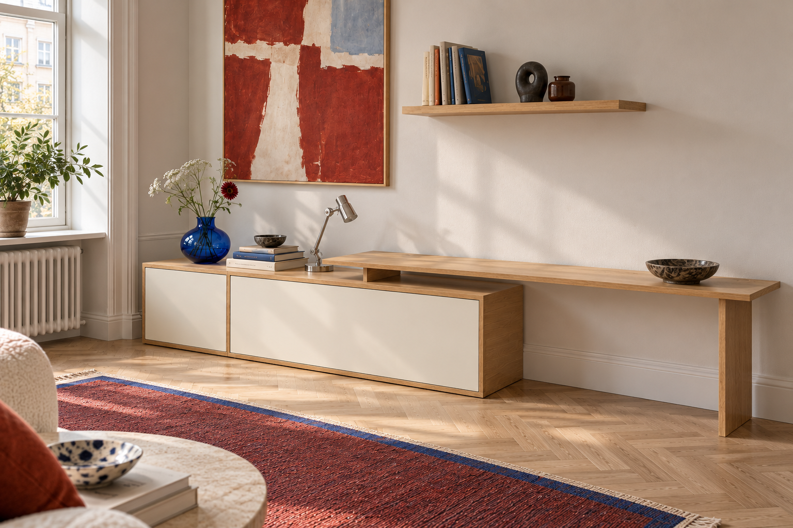

Yeni bir alan.
Aynı ADØP.
Tablayı kaydır, parçalarını yeniden yerleştir. Çoğu zaman yeni modül almadan alanına uyum sağla. İhtiyacın artarsa modül ekle.

Kapaklı, çekmeceli veya açık. İhtiyacına göre seç.
Modülleri inceleTablayı kaydır, alanının tam ölçüsüne getir.
Kaydırmayı deneDolap ve raflarla duvarını tamamla.
Kombinasyonları keşfetYalnızca ayarlanabilir tabla bağlantısını tak.
Tablayı kaydır, parçalarını yeniden yerleştir. Çoğu zaman yeni modül almadan alanına uyum sağla. İhtiyacın artarsa modül ekle.
Hazır monte kutuları ayrı ayrı taşı. Tablayı kaydırarak aynı ADØP’u yeni evine uyarla.
Bir kombinasyondan başla veya kendi düzenini kur.
Görseller konsept önizlemedir. Uyum, seçilen modüllere ve tabla hareket sınırlarına göre hesaplanır. Ölçü, bağlantı ve fiyatlar üretim öncesinde kesinleşir.